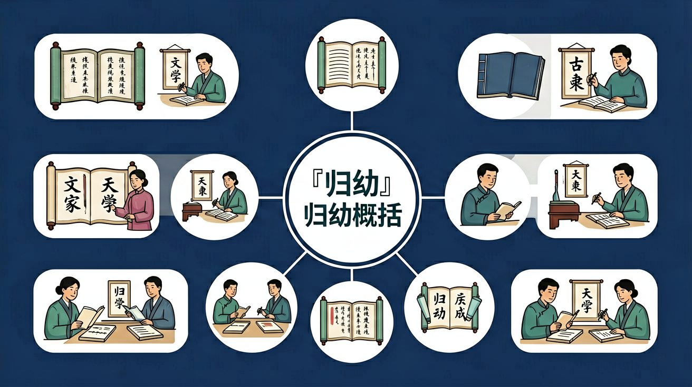

🌍 And（已知）：我们已经有了一定的基础知识
⚡ But（问题）：但还有一个重要概念需要深入理解
💡 Therefore（新知）：因此通过本节课的学习，我们将掌握新知识并能灵活运用
先做做看，了解你现在掌握了多少！
回忆：今天学了哪些关键词和规则？试着说出来。
用自己的话解释今天学的核心概念，不看书能说清楚吗？
用今天的知识解决一个实际问题，或写一个新例子。
把今天的知识与已有知识联系起来：有什么共同点？有什么区别？能不能自己创造一道新题？
先独立作答，再点选项查看对错与错因。
哪项最能概括五种植物的共同特点？
根据观察记录，哪项属于具体特征而非概括？
如果要给观察日记加标题，最合适的是？
香樟树用____防虫，月季用____防伤害，蒲公英用____传播种子。
答案：特殊气味|尖刺|随风飘散的种子
填写各植物最显著的特征
观察日记中'三叶草叶片呈____形'属于____(具体特征/概括结论)。
答案：心|具体特征
区分描述性语句与总结性语句
什么是'归纳概括'的正确理解？
选择校园里另一种植物，观察其特殊结构
❓ 为什么我总把归纳和总结搞混？
❓ 老师说的'关键信息'到底长什么样？
❓ 抄课文算不算归纳概括？
学完这一课，这些问题你都能自信地回答。
像拆积木一样把文章分成小块
给每块积木贴标签说明作用
找出相同颜色的积木块
画出信息之间的关系图
用搭好的积木盖新房子
✅ 用自己的话重组关键信息
💡 混淆'摘抄'与'概括'
✅ 用'谁+何时+何地+做什么'模板
💡 过度关注情节忽略要素
口诀：找关键，分分类，合起来，说清楚
类比：就像整理衣柜：按季节分类衣服，再总结出穿搭规律